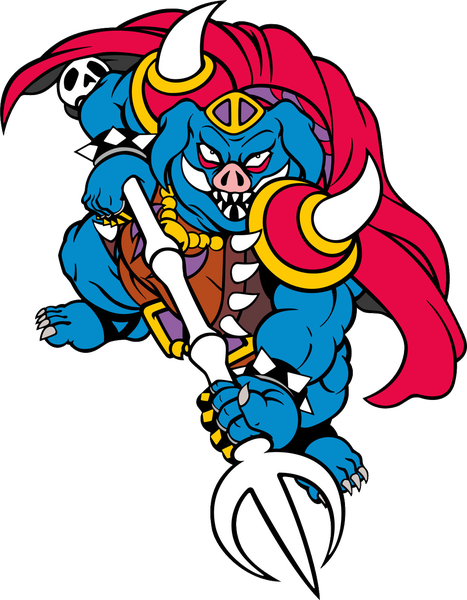
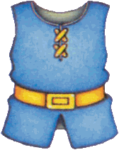
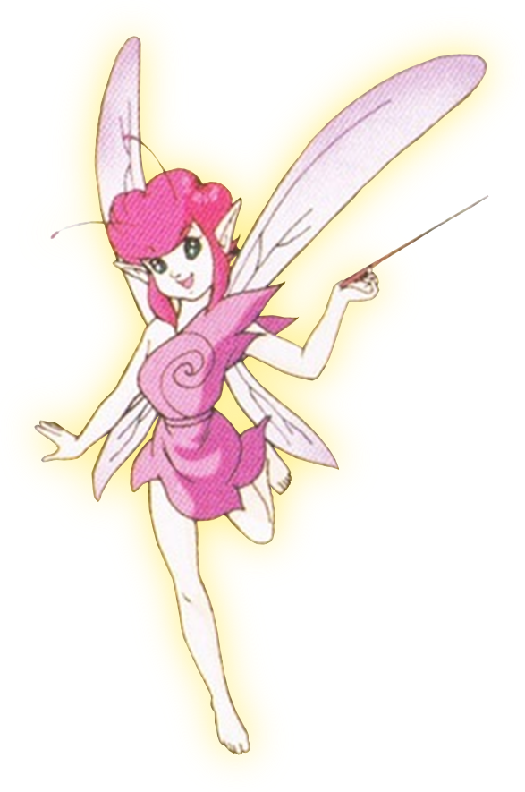

12 难度与心流
核心问题
- ALttP 的难度曲线是什么形状？这条曲线如何在13个地下城和两个世界的跨度中维持挑战与技能的同步增长，使玩家持续处于心流状态而非滑入焦虑或无聊？
- 游戏没有难度选择——一个机制如何同时服务新手（15-20小时首通）和老手（10-12小时）乃至速通者（1-2小时）？容错设计与惩罚机制如何在不破坏紧张感的前提下降低挫败？
机制描述
全流程难度曲线
ALttP 的难度曲线可以描述为阶梯式上升 + 两次跳变的形状：
全流程难度曲线：阶梯式上升，Light→Dark World 处有一次显著的难度跳变
阶梯的具体参数：
| 阶段 | 地下城 | 难度定位 | 核心挑战维度 | 预计时长 |
|---|---|---|---|---|
| 序章 | Hyrule Castle | 最低，纯教学 | 基本操作（移动、挥剑、举盾） | 30分钟 |
| Light World | Eastern Palace | 入门 | 弓的教学使用，简单线性结构 | 45-60分钟 |
| Light World | Desert Palace | 渐进 | 环境因素（沙漠、地下层），小钥匙管理 | 45-60分钟 |
| Light World | Tower of Hera | Light World峰值 | 5层垂直空间，Moldorm在窄平台战斗 | 45-60分钟 |
| 跳变 | Hyrule Castle Tower → Dark World | 难度突变 | 更强敌人、新世界、地图知识部分失效 | — |
| Dark World | Palace of Darkness | Dark World教学关 | 暗室视野限制，锤击桩 | 60-90分钟 |
| Dark World | Swamp Palace | 认知升级 | 水位状态翻转，钩爪多目标 | 60-90分钟 |
| Dark World | Skull Woods | 空间认知打破 | 散布式布局，多入口 | 45-60分钟 |
| Dark World | Thieves' Town | 中等波动 | NPC欺骗，假墙，多楼层 | 45-60分钟 |
| Dark World | Ice Palace | Dark World峰值 | 6层最深结构，冰面滑行，钥匙跨楼层搬运 | 60-90分钟 |
| Dark World | Misery Mire | 高难度 | 泥地减速，传送网络，远程敌人密度 | 60-90分钟 |
| Dark World | Turtle Rock | 常规最高 | 三元素联动，机关密度最高 | 60-90分钟 |
| 跳变 | Ganon's Tower | 终极考核 | Boss复战+Agahnim+Ganon三连 | 60-90分钟 |

容错设计体系
ALttP 建立了一套多层容错机制，每一层在不同维度上降低失败的痛苦：
第一层：死亡惩罚极低
| 事件 | 结果 |
|---|---|
| 在表世界死亡 | 回到最后进入的建筑物，不丢失任何物品/卢比 |
| 在地下城内死亡 | 回到地下城入口，保留已获得的小钥匙/物品，不丢失卢比 |
| Boss 战失败 | 回到 Boss 房门前，保留当前地下城进度 |
死亡不产生永久性损失。已获得的钥匙、已打开的门、已获得的物品在重新进入后全部保留。这意味着每次尝试都是纯增量的——玩家不会"越死越穷"。
第二层：HP持续增长
| 成长来源 | 机制 | 数值效果 | 分布 |
|---|---|---|---|
| 心之容器 | 击败Boss固定掉落 | +1心 | 12个（固定节点） |
| 心之碎片 | 探索发现，4枚合一 | +1心 | 24个（散布世界） |
| 妖精瓶 | 死亡时自动复活 | 回复几颗心 | 最多4个 |
从初始3心到最大20心，HP增长近7倍。即使不刻意收集心之碎片，仅Boss掉落的心之容器就将HP提升到14心（初始的近5倍）。这个增长幅度足以让"反复尝试但逐渐变强"的玩家最终通过任何挑战。
第三层：战术储备
- 瓶子（最多4个）：可装入回复药、妖精（自动复活）、魔法药。每个瓶子是一次"紧急回复"的储备。
- 防具升级：Blue Mail（受伤害×0.5）→ Red Mail（受伤害×0.25）。后期玩家的有效HP为标称值的4倍。
- 魔法升级：大魔法槽使所有魔法消耗减半，道具使用的可持续性翻倍。

第四层：免费回复点
| 回复方式 | 位置 | 成本 |
|---|---|---|
| 妖精泉 | 世界各处固定位置 | 免费 |
| 圣域（Sanctuary） | 任意时点用魔法镜/笛子返回 | 免费 |
| Boss掉落心之容器 | 击败Boss时 | 自动（满血恢复） |
| 瓶子中预存的妖精 | 携带在身上 | 已付出捕捉成本 |

紧张/释放的交替节奏
ALttP 的节奏由表世界和地下城的交替天然形成：
表世界（低压）→ 地下城入口（过渡）→ 地下城（高压）→ Boss（压力峰值）→ 获得新物品（释放/成就）→ 回到表世界（低压）这个交替模式在13个地下城中重复，但每个循环的峰值在上升。具体地，一个完整的宏循环中的情绪曲线：
单个宏循环的情绪强度曲线：从低压探索到高压战斗再到释放，形成完整的心跳节奏
不同玩家水平的体验差异
ALttP 通过物品升级和心之碎片实现了天然的"自选难度"：
| 玩家类型 | 行为特征 | 预计时长 | 关键差异 |
|---|---|---|---|
| 新手 | 反复试错+瓶子药水通关，不刻意探索 | 15-20小时 | 心之碎片收集不全，防具升级较晚，依靠瓶子和妖精兜底 |
| 老手 | 理解敌人模式，利用物品协同，适度探索 | 10-12小时 | 收集大部分心之碎片，早期获得升级，高效利用道具组合 |
| 速通者 | 利用涌现玩法和漏洞，精确路线规划 | 1-2小时（无大glitch） | 跳过非必需内容，利用敌人的行为模式和物品的非预期用法 |
一个关键观察：新手在Ice Palace可能卡2-3小时（迷路+反复死亡），老手可能30分钟通过，速通者可能10分钟。同一个地下城为三种玩家提供了截然不同的体验——不是因为地下城有三种难度模式，而是因为玩家的知识、技能和装备状态自然形成了"难度自选"。
设计分析
解决了什么设计问题
问题一：如何在没有难度选择的情况下服务所有玩家。
多数游戏通过显式难度选项（简单/普通/困难）来解决这个问题。但ALttP只有一种难度——或者说，它将"难度选择"嵌入到了玩法循环中：
- 探索者收集更多心之碎片 → HP更高 → 战斗更容错 → 难度自降
- 战斗爱好者更快击倒Boss → 省下买药水的卢比 → 更多瓶子装妖精 → 容错更高
- 速通者跳过非必需内容 → HP更低、装备更弱 → 难度自升
这不是被动难度调节（如《马力欧卡丁车》的橡皮筋机制），而是玩家行为驱动的难度自选。玩家的游玩风格决定了他们面对的难度水平，但游戏从不显式告诉玩家"你正在选择难度"。
问题二：如何在13个地下城中持续制造紧张感而不让玩家倦怠。
如果每个地下城都比前一个"更强敌人+更高伤害"，玩家会在第7-8个地下城时感到纯粹的数值疲劳。ALttP的解决方案是为每个地下城引入新的挑战维度而非简单加强数值（03 地下城设计）。
| 地下城 | 新增维度 | 对应的认知/操作挑战 |
|---|---|---|
| Palace of Darkness | 视野限制 | 空间感知（看不见的敌人） |
| Swamp Palace | 状态翻转 | 时间规划（排水→蓄水的顺序） |
| Skull Woods | 空间认知打破 | 心理地图重构（散布式布局） |
| Ice Palace | 物理规则改变 | 操作精度（冰面滑行）+ 长程规划（跨楼层钥匙搬运） |
| Turtle Rock | 多元素联动 | 工作记忆（同时管理多种状态） |
每个新维度都在说"你需要学新东西"，而非"你需要做同样的事但做得更好"。这维持了新鲜感，将难度递进转化为认知递进。
问题三：如何让低死亡惩罚不破坏紧张感。
低惩罚的一个潜在危险是：如果"死不死都一样"，玩家会失去对死亡的恐惧，游戏失去紧张感。ALttP通过两个机制避免这个问题：
- 时间惩罚而非资源惩罚：死亡后重跑地下城的路程本身就是一种时间成本。在后期地下城（如Ice Palace的6层结构），从入口跑回死亡位置可能需要2-3分钟。这个时间不长到令人沮丧，但长到让玩家"不想再死一次"。
- 进度保留+状态重置的混合：死亡保留已获得的钥匙和物品（纯增量），但重置HP和房间状态。这意味着玩家不会失去"已经完成的进展"，但每次尝试都需要"从头开始执行"。失败成本在"认知"层面（你知道怎么做了）而非"资源"层面（你不需要重新收集钥匙）。
创造了什么体验
"学习式"的难度体验。 死亡在ALttP中不是惩罚，而是信息。每次死亡都告诉玩家"那个攻击模式我没有看清""那个平台我站得太靠边了"。玩家对死亡的反应不是"完了，我损失了东西"，而是"我知道了，下次注意"。这种心态使玩家愿意反复尝试而不是放弃。
"终于通了"的峰值体验。 在Ice Palace迷路30分钟后终于找到正确的钥匙路线，在Turtle Rock的Trinexx战中成功切换冰火杖打倒三头龙——这些时刻的满足感与挑战持续的时间成正比。低惩罚确保玩家能坚持到这个时刻，而高挑战确保这个时刻到来时足够强烈。
"游刃有余"的奖励感。 接近游戏尾声时，如果玩家收集了大量心之碎片和升级防具，战斗变得轻松。但此时游戏已经接近通关，这种轻松感不是设计缺陷，而是奖励——"我变强了"的最直接证据就是在同样的敌人面前从手忙脚乱变为从容应对。Ganon's Tower中的Light World Boss复战正是为此设计（03 地下城设计 Tower 的复战设计）。
关键设计决策及其理由
决策一：死亡不丢失任何物品和卢比。
这个决策将死亡的成本从"资源损失"转移到"时间损失"。理由：资源损失是不可逆的负面反馈，会制造焦虑；时间损失是可逆的（可以重跑），制造的是轻微的厌烦感而非恐惧。ALttP选择了厌烦而非焦虑，这与游戏"冒险探索"的整体基调一致——它不是生存恐怖游戏，不应该让玩家害怕死亡。
决策二：Boss掉落的心之容器同时是满血恢复。
击败Boss后满血，意味着玩家总是以最佳状态进入下一个阶段。这消除了"Boss战后残血进入新区域"的连续压力。理由：Boss战本身就是压力峰值，峰值之后应该是完全的释放。如果Boss战后仍然残血，释放感被削弱，节奏被打乱。
决策三：心之碎片（4枚合一）散布在表世界各处。
心之碎片不仅仅是HP提升——它们是散布在探索路径上的微型目标。理由：如果HP提升只来自Boss掉落，玩家在两个地下城之间（可能间隔1-2小时）没有任何正反馈。碎片提供了"虽然没打Boss，但我离变强又近了一步"的渐进感（04 进度系统）。
决策四：Light→Dark的难度跳变而非渐变。
从Light World进入Dark World后，敌人更强、地形更复杂、谜题更多维。这不是温和的坡度上升，而是一个明确的台阶。理由 推测：设计团队需要一个强有力的"第二幕开端"信号，告诉玩家"规则变了"。渐变可能让玩家无法明确感知"新阶段开始了"，而跳变创造了清晰的心理断点。
心流分析（Csikszentmihalyi框架）
Mihaly Csikszentmihalyi 的心流理论指出，当挑战与技能匹配时，人进入最佳体验状态（心流）。挑战过高导致焦虑，技能过高导致无聊。
心流通道：挑战与技能的动态平衡，容错设计拓宽了可接受的心流范围
ALttP 通过以下机制维持挑战与技能的匹配：
技能增长的来源：
- 玩家认知提升：理解敌人行为模式、学会地图导航、掌握道具组合
- 物品/防具升级：新的战斗工具、更高的伤害输出、更低的受伤比例
- HP增长：更大的容错空间
挑战增长的来源：
- 更强的敌人：颜色编码体系（绿→蓝→红→金）直接提升参数（05 战斗系统）
- 更复杂的谜题：每个地下城引入新维度
- 更复杂的空间结构：从线性走廊到散布迷宫
两者的同步上升维持了心流状态。具体地：
| 游戏阶段 | 玩家技能状态 | 挑战水平 | 匹配方式 |
|---|---|---|---|
| Light World早期 | 低（新手） | 低（简单敌人+线性结构） | 基础匹配 |
| Light World后期 | 中（理解规则） | 中（Moldorm平台战） | 同步上升 |
| Dark World入口 | 中 | 高（跳变） | 短暂焦虑→适应性学习→回到心流 |
| Dark World中期 | 中-高 | 高（新维度叠加） | 持续心流 |
| Dark World后期 | 高 | 高-极高（Turtle Rock） | 心流上限 |
| 终局 | 高+过度成长 | 极高（Ganon's Tower）→然后下降 | 最后冲刺后进入"游刃有余" |
关键观察：心流通道的宽度随时间变宽。
在游戏早期，心流通道很窄——新手稍微遇到一个超出当前水平的挑战就会焦虑。但ALttP通过容错设计（低死亡惩罚+瓶子+妖精）有效地拓宽了心流通道：即使挑战超出了玩家的技能，容错机制提供了一个缓冲区，使玩家不会立刻滑入"焦虑"区域，而是有空间通过反复尝试来提升技能。
这就是为什么ALttP能在没有难度选择的情况下服务所有玩家——它不是让挑战适配技能，而是拓宽了"可接受的挑战范围"。
设计过程推导
容错设计的推导路径 推测
起点约束：
- 目标受众包括儿童和休闲玩家（1991年的SNES市场）
- 游戏需要15-20小时的持续吸引力
- 核心体验是"探索与发现"，不是"生存与挣扎"
推导：
- 儿童玩家 → 高失败率是必然的 → 需要低死亡惩罚 → 但低惩罚可能破坏紧张感 → 寻找"低资源惩罚+高时间惩罚"的平衡点 → 保留钥匙进度，重置房间状态
- "探索与发现"核心 → 失败不应阻断探索流 → 死亡后应快速回到挑战点而非从头开始 → 地下城内死亡回到入口而非世界起点 → 结合保留的钥匙进度，重跑成本可控
- 15-20小时的流程 → 玩家可能在某些Boss上卡很久 → 需要一种"玩家越卡越容易"的机制 → 心之容器的累积HP增长 + 瓶子的战术储备 = 玩家每次失败后都变强一点（即使只是因为"我理解了Boss模式"）
- 推测 魔法镜的"传送回圣域"功能可能是为了解决一个节奏问题：如果玩家在Dark World深处陷入困境（HP低、弹药少），需要一种低成本的退出方式。强行跑回入口会制造挫败感，而死掉又浪费已探索的进度。魔法镜提供了一种"体面的撤退"——随时退出，不丢进度，回到安全点回复后再回来。
Light→Dark跳变的推导路径 推测
设计目标： Dark World需要让玩家感到"一切升级了"，但核心循环不变。
推导：
- 不能只增加数值（更多敌人、更高伤害）→ 重复感 → 需要引入新维度 → 但不能引入全新系统（开发成本+学习成本）→ 利用现有系统的组合创造新体验
- "地图知识部分失效"是最有效的难度跳变手段 → Dark World复用Light World的地图拓扑 → 但视觉和敌人完全不同 → 玩家"好像认识这个地方"但又不确定 → 强制重新建立心理地图 → 认知负荷骤升，但不是不可承受的（因为基础结构相同）
- 跳变需要一个缓冲 → Palace of Darkness作为Dark World第一个地下城 → 它是"Dark World的教学关" → 暗室视野限制是新的挑战维度，但结构相对简单 → 为后续更复杂的Dark World地下城提供过渡
"自选难度"的发现可能是无意的 推测
心之碎片和瓶子系统在设计初期可能只是为了增加探索动力和战术深度，而非显式地为不同水平的玩家提供难度调节。但这两个系统的自然结果是：
- 探索型玩家收集更多碎片 → HP更高 → 难度更低
- 战斗型玩家跳过碎片直奔Boss → HP更低 → 难度更高
- 规划型玩家用瓶子装满妖精 → 多4条命 → 难度更低
- 冲动型玩家瓶子装蜜蜂或不装 → 少4条命 → 难度更高
不同游玩风格自然导致不同难度水平，这个效果可能超出了设计者的显式意图。但无论是否是预设的，它都是ALttP最优雅的设计特征之一——用同一套规则服务了所有类型的玩家。
反事实推演
假设一：如果死亡惩罚包含卢比丢失（如丢失一半卢比）
后果：
- 每次死亡都需要"回城买药水"的补给循环变得更痛苦——因为死亡本身就在消耗买药水的钱
- 玩家在Boss战前会过度囤积卢比以应对失败成本，经济系统的"续航保险"定位被破坏
- 新手玩家可能陷入"死亡→没钱买药水→更容易死亡"的恶性循环
- 战斗体验从"学习"变为"恐惧失败"，与游戏探索优先的整体基调冲突
→ 结论：零资源损失的死亡惩罚是ALttP"学习式难度"的基石。引入资源损失将改变死亡的心理意义——从"信息"变为"惩罚"。
假设二：如果去掉心之碎片系统，HP增长仅来自Boss掉落的心之容器
后果：
- HP从最大20心降至14心（11个容器+初始3心），后期容错空间缩小30%
- 表世界失去24个微型探索目标，两次地下城之间的"漫游"失去正反馈
- 新手和速通者之间的HP差距大幅缩小——因为心之容器是固定获取的，所有玩家都拿到同样数量
- "自选难度"机制大幅削弱——探索型玩家不再通过额外收集获得难度优势
→ 结论：心之碎片系统表面上是数值成长，实际上是难度调节器和探索驱动器的双重工具。去掉它，游戏在心流维持和探索动力两个维度同时受损。
假设三：如果去掉容错设计的缓冲（瓶子4→0，防具无升级，妖精不存在）
后果：
- 玩家的有效HP从约80心（20心×4倍减伤+瓶子回复）降至20心（裸体20心）
- Boss战从"多次尝试后通关"变为"必须完美执行才能通关"
- 新手几乎不可能通关游戏——Ice Palace和Turtle Rock的认知负荷加上近乎零容错的战斗将导致大量弃游
- 游戏的目标受众从"全年龄"收窄到"硬核动作游戏玩家"
- 预计弃游率在Dark World中期（Ice Palace附近）达到峰值
→ 结论：容错系统不是"降低难度"——它是"降低门槛的同时保留挑战"。去掉容错后游戏并非变得"更难"，而是变得"只有一种人能玩"。ALttP的设计目标是让所有类型的玩家都能通关并享受过程，容错系统是实现这一目标的核心工具。
假设四：如果Light→Dark的难度是渐变而非跳变
后果：
- Dark World的开场缺乏"冲击感"——玩家可能没有明确感知到"新阶段开始了"
- Palace of Darkness作为教学关的必要性降低——如果敌人只是比Light World略强，不需要专门的缓冲关卡
- Dark World的叙事意义被削弱——Dark World在叙事上是"被邪恶侵蚀的平行世界"，难度跳变是这种叙事的游戏层表达。渐变与叙事不匹配
- 玩家的心理过渡点变得模糊——Light World和Dark World之间的界限感降低
→ 结论：难度跳变不仅是游戏设计选择，也是叙事设计选择。跳变的幅度与Dark World的"邪恶平行世界"定位直接对应。渐变会让这个叙事设定在游戏感受层面变得无力。
假设五：如果在Ice Palace之后难度继续严格上升（无波动）
ALttP的难度曲线在Ice Palace后实际上有一个微小的下降或持平（Thieves' Town比Ice Palace简单），之后在Misery Mire和Turtle Rock重新上升。 如果严格单调递增：
- 玩家在连续面对Ice Palace → Misery Mire → Turtle Rock → Ganon's Tower的严格递增难度时，认知和操作疲劳会累积
- 没有喘息空间，"终于通了"的峰值体验被前一个峰值覆盖——玩家来不及享受一个成就就被推向下一个挑战
- 弃游风险在连续高难度段落中显著上升
→ 结论：难度曲线中的"波动"（局部下降或持平）不是设计失误，而是节奏控制。偶尔的轻松段落让玩家在心理上"充电"，为下一个高峰做准备。这与音乐中的"紧张-释放"结构同构。
可迁移经验
不要用"提高挑战"或"降低挑战"的二选一来解决难度问题。而是通过容错机制拓宽"可接受的挑战范围"——让同一个挑战对新手来说"可以靠多次尝试通过"，对老手来说"可以一次无伤通过"。容错的手段包括：低死亡惩罚、自动存档、HP自然增长、战术储备（药水/复活）。
不要用"更多敌人、更高伤害"来提升后续关卡的难度。为每个新阶段引入一个新的挑战维度（视野限制、物理规则改变、空间结构打破等）。新维度需要玩家学习新策略，产生"每一关都在教我新东西"的感觉，而非"每一关都在要求我做得更好"。
与其提供显式难度选项（简单/普通/困难），不如将难度调节嵌入玩法循环中。让玩家通过自己的行为（探索/跳过、收集/忽略、规划/冲动）自然决定他们面对的难度水平。关键在于：额外的准备（收集品、升级、储备）必须能显著降低难度，这样"选择做更多准备"就等于"选择更低难度"。
当游戏有明确的"阶段转折"（新世界、新章节、新机制引入）时，使用难度跳变而非渐变来强化转折的心理冲击。跳变传递的信号是"规则变了"，与叙事层面的转变形成共振。但跳变后必须紧跟一个缓冲段落（教学关），让玩家有时间适应新规则。
设计死亡机制时，将死亡定位为"给玩家的反馈信息"而非"对玩家的惩罚"。保留进度（已获得的物品、已打开的门），只重置状态（HP、位置）。这样玩家的每次尝试都是纯增量的——他们不会因为死亡而"退步"，只会因为尝试而"学到更多"。这种设计让反复尝试变成学习过程而非受苦过程。
难度曲线不需要（也不应该）严格单调递增。在高难度段落之间插入相对轻松的段落，让玩家有时间消化刚学到的东西、享受成长的满足感。连续的高难度段落会导致疲劳和弃游。理想的难度曲线是"整体上升、局部波动"——像一座总体走向山顶但有起伏的山脉。
Boss战后的满血恢复、获得新物品后的能力扩展、回到表世界的低压探索——这些"释放"段落不是无聊的填充物，而是挑战的心理回报。如果游戏持续高压不释放，玩家会耗尽动力。每次峰值后的释放段落都是玩家"享受变强"的时间，这种享受本身就是继续前进的燃料。
补充材料
补充材料
难度曲线对比
| 维度 | 众神的三角神力 (1991) | 超银河战士 (1994) | Dark Souls (2011) | 旷野之息 (2017) |
|---|---|---|---|---|
| 曲线形状 | 阶梯上升+两次跳变 | 连续上升+能力爆发 | 整体平坦+局部尖峰 | 初期陡峭→后期平坦 |
| 死亡惩罚 | 极低（保留进度） | 低（保留进度） | 中（掉落灵魂） | 低（回存档点） |
| 难度调节手段 | 物品收集+HP成长 | 能力收集+弹药升级 | 等级+装备+召唤 | 食物/装备/神庙顺序 |
| 新手/老手时长比 | ~2:1 (20h/10h) | ~2:1 (15h/8h) | ~3:1 (80h/30h) | ~2:1 (60h/30h) |
每个地下城的难度维度分解
| 地下城 | 操作难度 | 认知难度 | 空间复杂度 | Boss难度 | 综合 |
|---|---|---|---|---|---|
| Eastern Palace | ★☆☆ | ★☆☆ | ★☆☆ | ★★☆ | ★☆☆ |
| Desert Palace | ★★☆ | ★★☆ | ★★☆ | ★★☆ | ★★☆ |
| Tower of Hera | ★★★ | ★★☆ | ★★★ | ★★★ | ★★☆ |
| Palace of Darkness | ★★☆ | ★★☆ | ★★☆ | ★★★ | ★★☆ |
| Swamp Palace | ★★☆ | ★★★ | ★★★ | ★★★ | ★★★ |
| Skull Woods | ★★☆ | ★★★ | ★★★★ | ★★★ | ★★★ |
| Thieves' Town | ★★☆ | ★★☆ | ★★★ | ★★★ | ★★☆ |
| Ice Palace | ★★★ | ★★★★ | ★★★★★ | ★★★ | ★★★★ |
| Misery Mire | ★★★ | ★★★ | ★★★★ | ★★★ | ★★★★ |
| Turtle Rock | ★★★★ | ★★★★ | ★★★★ | ★★★★★ | ★★★★★ |
| Ganon's Tower | ★★★★ | ★★★ | ★★★★ | ★★★★★ | ★★★★★ |